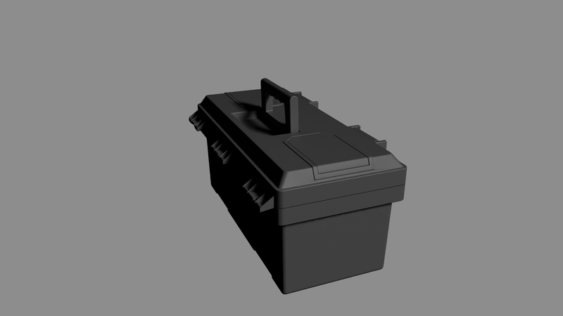

Minimal Placeable Visual#
Property |
Value |
|---|---|
Version |
1.0.0 |
Dependency |
OpenUSD |
Description#
The minimal placeable visual feature comprises a list of requirements that enable the digital representation of a real world object to be visualized in a broad range of applications.
It additionally provides a list of requirements to ensure that the scale, units and placement of the object may be correctly represented, so that the object can be placed and aggregated with other objects in a scene.

Fig 1: Visualization of a simple asset in NVIDIA Omniverse to demonstrate the capabilities of the minimal placeable visual feature.#
For details, see Runtime Testing.
Requirements#
Runtime Testing#
To verify this feature, the following runtime testing requirements should be met.
Category |
Requirement ID |
Description |
|---|---|---|
Loading and Display |
AA.002 |
Not strictly required as a part of this feature, but a good baseline test to have in all runtime testing. The asset loads into a runtime environment without errors or warnings related to unsupported schemas or invalid data. Asset is loaded into stage, no framing camera framing is performed |
Loading and Display |
VG.001, VG.002 |
The asset’s geometry is visible and can be automatically framed by the viewport’s perspective camera, indicating a valid and computable bounding box. Camera is automatically framed |
Coordinate System and Scale |
UN.001, UN.006 |
When referenced into a stage with upAxis set to ‘Z’, the asset appears with the correct “up” direction. “up arrow” gizmo is positioned next to the asset |
Coordinate System and Scale |
UN.002, UN.007 |
When referenced into a stage with metersPerUnit set to 1.0, the asset appears at its correct, real-world physical scale (e.g., a 2-meter tall object is 2 units high in the scene). Scale reference asset (human silhouette) is positioned next to the asset |
Transformation and Pivot Point |
HI.001, HI.003 |
The asset can be positioned, rotated and scaled by setting the translate, rotate and scale attributes on the root prim. A grid is visible. Asset is translated to 10 units in x via the xformCommonApi. The asset and the stage origin are framed by the camera. Asset is translated to 10 units in y via the xformCommonApi. The asset and the stage origin are framed by the camera. Asset is translated to 10 units in z via the xformCommonApi. The asset and the stage origin are framed by the camera. |
Transformation and Pivot Point |
VG.025 |
The transformation gizmo (manipulator) for the asset’s root prim appears at the logical pivot point as defined in the specification (e.g., at the center of the base for an object that sits on the ground). A “Pivot gizmo” prim is positioned at the computed transform of the assets root prim. |
Transformation and Pivot Point |
VG.025 |
An asset designed to articulate (e.g., a hinged door) rotates correctly around the specified pivot point of the moving part. Asset rotates in 10 degree steps in x via the xformCommonApi. The asset and the stage origin are framed by the camera. |
Geometry and Shading |
VG.MESH.001, VG.014 |
The asset’s surfaces render correctly without unintended holes or gaps. Light spins around the object |
Geometry and Shading |
VG.028 |
With back-face culling enabled in the viewport, surfaces are not culled incorrectly, verifying proper normal orientation. Camera spins around the object |
Geometry and Shading |
VG.027, VG.028, VG.029 |
Surface shading appears smooth (no faceting) for curved surfaces and shows hard edges where intended, verifying that normals are authored correctly. Camera spins around the object |
Composition and Metadata |
HI.004 |
The asset can be successfully referenced into a parent aggregation scene without the need to specify the prim path (default prim). |
Python Testing Script#
We supply a simple test script to run most of the tests so you can verify the feature in your own runtime with your own assets. A test asset is available for download here, as well as the resulting USD stage here. Note that selection and hierarchy tests are not included in the test script.
# Example
pip install usd-core
python test-minimal_placeable_visual.py toolbox.usdc minimal_placeable_visual-runtime_test-toolbox
1# SPDX-FileCopyrightText: Copyright (c) 2026 NVIDIA CORPORATION & AFFILIATES. All rights reserved.
2# SPDX-License-Identifier: Apache-2.0
3
4from pxr import Usd, Tf, UsdUtils, UsdGeom, Gf, Sdf, UsdLux, UsdShade
5
6from math import atan, radians as rad, floor, ceil
7import argparse
8import os
9import sys
10from typing import Optional, Tuple
11
12import logging
13logging.basicConfig(level=logging.INFO)
14
15logger = logging.getLogger(__name__)
16
17
18class USDLoadingError(Exception):
19 """
20 Exception raised when USD asset loading encounters warnings or errors.
21
22 Attributes:
23 asset_path: Path to the asset that failed to load cleanly
24 diagnostics: List of diagnostic messages from USD
25 fatal_error: Optional fatal exception that occurred during loading
26 """
27
28 def __init__(self, asset_path: str, diagnostics: list = None, fatal_error: Exception = None):
29 self.asset_path = asset_path
30 self.diagnostics = diagnostics or []
31 self.fatal_error = fatal_error
32
33 # Build error message
34 message_parts = [f"USD asset failed to load cleanly: {asset_path}"]
35
36 if fatal_error:
37 message_parts.append(f"Fatal error: {fatal_error}")
38
39 if diagnostics:
40 message_parts.append(f"Diagnostics ({len(diagnostics)} issues):")
41 for i, item in enumerate(diagnostics, 1):
42 message_parts.append(f" {i}. {item.diagnosticCodeString}: {item.commentary}")
43
44 super().__init__("\n".join(message_parts))
45
46
47# =============================================================================
48# ANIMATION CONFIGURATION
49# =============================================================================
50
51class AnimationConfig:
52 """Configuration constants for controlling the animation sequence and timing."""
53
54 # Timeline Settings
55 FRAME_RATE: int = 60 # Frames per second
56 TOTAL_DURATION: int = 720 # Total animation length in frames (12 seconds at 60fps)
57
58 # Asset Movement Animation (traversing bounding box corners)
59 ASSET_MOVEMENT_ENABLED: bool = True
60 ASSET_MOVEMENT_START: int = 261 # Start after visualizations complete
61 ASSET_MOVEMENT_END: int = 340
62 ASSET_MOVEMENT_KEYFRAME_INTERVAL: int = 5 # Frames between keyframes
63
64 # Light Spinning Animation (renderer-specific lighting)
65 LIGHTS_ENABLED: bool = True
66 LIGHTS_SPIN_START: int = 181
67 LIGHTS_SPIN_END: int = 260
68
69 # Renderer-specific light settings
70 LIGHTS_OMNIVERSE_ENABLED: bool = True
71 LIGHTS_STORM_ENABLED: bool = False
72 LIGHTS_OMNIVERSE_INTENSITY: float = 500.0
73 LIGHTS_STORM_INTENSITY: float = 1.0
74 LIGHTS_ANGLE: float = 15.0
75
76 # Asset Spinning Animations
77 ASSET_SPINNING_ENABLED: bool = True
78
79 # First spin (Z-axis)
80 ASSET_SPIN_Z_START: int = 21
81 ASSET_SPIN_Z_END: int = 100
82 ASSET_SPIN_Z_AXIS: str = 'z'
83
84 # Second spin (X-axis)
85 ASSET_SPIN_X_START: int = 101
86 ASSET_SPIN_X_END: int = 180
87 ASSET_SPIN_X_AXIS: str = 'x'
88
89 # Additional spin phases (can be enabled by changing start/end times)
90 ASSET_SPIN_Y_START: int = 561
91 ASSET_SPIN_Y_END: int = 561 # Disabled by default (start == end)
92 ASSET_SPIN_Y_AXIS: str = 'y'
93
94 # Visualization Settings
95 ORIGIN_VISUALIZATION_ENABLED: bool = True
96 ORIGIN_VIZ_SIZE_SCALE: float = 1.0
97 ORIGIN_VIZ_START_FRAME: int = 1 # Frame when origin visualization starts
98 ORIGIN_VIZ_END_FRAME: int = 10 # Frame when origin visualization ends
99
100 SIZE_REFERENCE_ENABLED: bool = True
101 SIZE_REF_GRID_SPACING: float = 0.1 # Grid spacing in meters
102 SIZE_REF_START_FRAME: int = 11 # Frame when grid visualization starts
103 SIZE_REF_END_FRAME: int = 20 # Frame when grid visualization ends
104
105 # Camera Settings
106 CAMERA_ENABLED: bool = True
107 CAMERA_FOV: float = 45.0
108 CAMERA_FRAME_FIT: float = 1.5
109
110 # Material Override Settings
111 MATERIAL_OVERRIDE_ENABLED: bool = True
112 MATERIAL_DIFFUSE_COLOR: tuple = (0.18, 0.18, 0.18) # Light gray diffuse
113 MATERIAL_METALLIC: float = 0.0 # Non-metallic
114 MATERIAL_ROUGHNESS: float = 0.4 # Moderate roughness
115
116 @classmethod
117 def get_animation_phases(cls) -> list[dict]:
118 """
119 Get a list of all animation phases in chronological order.
120 Useful for debugging and understanding the animation sequence.
121 """
122 phases = []
123
124 if cls.ASSET_MOVEMENT_ENABLED:
125 phases.append({
126 'name': 'Asset Movement',
127 'start': cls.ASSET_MOVEMENT_START,
128 'end': cls.ASSET_MOVEMENT_END,
129 'description': 'Asset moves through bounding box corners'
130 })
131
132 if cls.LIGHTS_ENABLED:
133 # Build description based on enabled renderers
134 enabled_renderers = []
135 if cls.LIGHTS_OMNIVERSE_ENABLED:
136 enabled_renderers.append(f"Omniverse ({cls.LIGHTS_OMNIVERSE_INTENSITY})")
137 if cls.LIGHTS_STORM_ENABLED:
138 enabled_renderers.append(f"Storm ({cls.LIGHTS_STORM_INTENSITY})")
139
140 renderer_desc = ", ".join(enabled_renderers) if enabled_renderers else "No renderers"
141 phases.append({
142 'name': 'Light Spinning',
143 'start': cls.LIGHTS_SPIN_START,
144 'end': cls.LIGHTS_SPIN_END,
145 'description': f'Renderer-specific lights rotate: {renderer_desc}'
146 })
147
148 if cls.ASSET_SPINNING_ENABLED:
149 if cls.ASSET_SPIN_Z_START < cls.ASSET_SPIN_Z_END:
150 phases.append({
151 'name': f'Asset Spin ({cls.ASSET_SPIN_Z_AXIS.upper()}-axis)',
152 'start': cls.ASSET_SPIN_Z_START,
153 'end': cls.ASSET_SPIN_Z_END,
154 'description': f'Asset rotates 360° around {cls.ASSET_SPIN_Z_AXIS.upper()}-axis'
155 })
156
157 if cls.ASSET_SPIN_X_START < cls.ASSET_SPIN_X_END:
158 phases.append({
159 'name': f'Asset Spin ({cls.ASSET_SPIN_X_AXIS.upper()}-axis)',
160 'start': cls.ASSET_SPIN_X_START,
161 'end': cls.ASSET_SPIN_X_END,
162 'description': f'Asset rotates 360° around {cls.ASSET_SPIN_X_AXIS.upper()}-axis'
163 })
164
165 if cls.ASSET_SPIN_Y_START < cls.ASSET_SPIN_Y_END:
166 phases.append({
167 'name': f'Asset Spin ({cls.ASSET_SPIN_Y_AXIS.upper()}-axis)',
168 'start': cls.ASSET_SPIN_Y_START,
169 'end': cls.ASSET_SPIN_Y_END,
170 'description': f'Asset rotates 360° around {cls.ASSET_SPIN_Y_AXIS.upper()}-axis'
171 })
172
173 # Add visualization phases
174 if cls.ORIGIN_VISUALIZATION_ENABLED:
175 duration = cls.ORIGIN_VIZ_END_FRAME - cls.ORIGIN_VIZ_START_FRAME + 1
176 phases.append({
177 'name': 'Origin Visualization',
178 'start': cls.ORIGIN_VIZ_START_FRAME,
179 'end': cls.ORIGIN_VIZ_END_FRAME,
180 'description': f'Coordinate axes visualization displayed for {duration} frames'
181 })
182
183 if cls.SIZE_REFERENCE_ENABLED:
184 duration = cls.SIZE_REF_END_FRAME - cls.SIZE_REF_START_FRAME + 1
185 phases.append({
186 'name': 'Size Reference Grid',
187 'start': cls.SIZE_REF_START_FRAME,
188 'end': cls.SIZE_REF_END_FRAME,
189 'description': f'Measurement grid displayed for {duration} frames'
190 })
191
192 # Add material override info (not time-based but relevant)
193 if cls.MATERIAL_OVERRIDE_ENABLED:
194 phases.append({
195 'name': 'Material Override',
196 'start': 0,
197 'end': cls.TOTAL_DURATION,
198 'description': f'USDPreview Surface applied (strongerThanDescendants)'
199 })
200
201 # Sort by start time
202 phases.sort(key=lambda x: x['start'])
203 return phases
204
205 @classmethod
206 def validate_config(cls) -> bool:
207 """Validate that the configuration makes sense."""
208 phases = cls.get_animation_phases()
209
210 # Check for overlapping phases
211 for i in range(len(phases) - 1):
212 current_end = phases[i]['end']
213 next_start = phases[i + 1]['start']
214 if current_end > next_start:
215 logger.warning(f"Animation phases overlap: '{phases[i]['name']}' ends at frame {current_end}, "
216 f"but '{phases[i + 1]['name']}' starts at frame {next_start}")
217
218 # Check if any animation goes beyond total duration
219 for phase in phases:
220 if phase['end'] > cls.TOTAL_DURATION:
221 logger.warning(f"Animation phase '{phase['name']}' ends at frame {phase['end']}, "
222 f"which is beyond total duration of {cls.TOTAL_DURATION} frames")
223
224 # Validate lighting configuration
225 if cls.LIGHTS_ENABLED and not (cls.LIGHTS_OMNIVERSE_ENABLED or cls.LIGHTS_STORM_ENABLED):
226 logger.warning("Lights are enabled but no renderer-specific lights are enabled - scene may be dark")
227
228 return True
229
230
231# =============================================================================
232# CORE FUNCTIONS
233# =============================================================================
234
235def loads_without_warnings_or_errors(asset_path: str) -> None:
236 """
237 Test whether a USD asset loads without emitting warnings or errors.
238 Uses USD's CoalescingDiagnosticDelegate to capture all diagnostic
239 messages (warnings and errors) that occur during stage loading.
240
241 Runtime Testing: AA.002 - "The asset loads into a runtime environment without
242 errors or warnings related to unsupported schemas or invalid data."
243 Note: This is not strictly required as part of the Minimal Placeable Visual
244 feature, but serves as a good baseline test for all runtime testing.
245
246 Note that USDImaging diagnostics will not be captured when USDImaging
247 is not in use, for example when using USD without a renderer.
248
249 Args:
250 asset_path (str): Path to the USD asset file to be tested.
251
252 Returns:
253 None: Function returns successfully if asset loads cleanly.
254
255 Raises:
256 USDLoadingError: Raised when any warnings, errors, or fatal exceptions
257 occur during stage loading. The exception contains detailed information
258 about all diagnostic messages encountered.
259 FileNotFoundError: If the asset file does not exist.
260
261 Example:
262 >>> try:
263 ... loads_without_warnings_or_errors("./test_asset.usda")
264 ... print("Asset passed validation")
265 ... except USDLoadingError as e:
266 ... print(f"Asset failed validation: {e}")
267 ... except FileNotFoundError:
268 ... print("Asset file not found")
269
270 Note:
271 This function raises exceptions with detailed diagnostic information
272 instead of logging and returning boolean values, making it easier to
273 integrate into automated validation workflows.
274 """
275
276 delegate = UsdUtils.CoalescingDiagnosticDelegate()
277
278 try:
279 stage = Usd.Stage.Open(asset_path)
280 except Exception as e:
281 # Collect any diagnostics that might have been generated before the fatal error
282 items = delegate.TakeUncoalescedDiagnostics()
283 raise USDLoadingError(asset_path, diagnostics=items, fatal_error=e)
284
285 items = delegate.TakeUncoalescedDiagnostics()
286
287 if items:
288 # Raise exception with all collected diagnostics
289 raise USDLoadingError(asset_path, diagnostics=items)
290
291 logger.info(f"Stage loaded without warnings or errors: {asset_path}")
292 return None
293
294
295
296
297class Camera:
298 """
299 A camera helper class for framing and positioning a USD camera to view scene geometry.
300
301 This class automatically positions and orients a camera to frame a given bounding box,
302 similar to viewport "frame all" functionality in 3D applications.
303
304 Logic is copied from usdview's freeCamera module:
305 https://github.com/PixarAnimationStudios/OpenUSD/blob/dev/pxr/usdImaging/usdviewq/freeCamera.py
306
307
308 TODO: Clipping planes
309 """
310
311 # DEFAULTS
312 CAMERA_PATH: str = '/CAMERA'
313 DEFAULT_NEAR: float = 0.1
314 DEFAULT_FAR: float = 2000000
315
316 def __init__(self, camera_prim: UsdGeom.Camera, isZUp: bool = False) -> None:
317 """
318 Initialize the camera with rotation and coordinate system setup.
319
320 Args:
321 camera_prim: USD camera prim to configure
322 isZUp (bool): Whether the stage uses Z-up coordinate system
323 """
324 # Initial rotation values for camera orientation
325 self._rotPsi: float = 0
326 self._rotPhi: float = 22.5 # Slight angle to avoid dead-on view
327 self._rotTheta: float = 22.5
328
329 self.camera_prim: UsdGeom.Camera = camera_prim
330 self._camera: Gf.Camera = Gf.Camera()
331
332 # Set up coordinate system transformation matrices
333 if isZUp:
334 self._YZUpMatrix: Gf.Matrix4d = Gf.Matrix4d().SetRotate(
335 Gf.Rotation(Gf.Vec3d.XAxis(), -90))
336 self._YZUpInvMatrix: Gf.Matrix4d = self._YZUpMatrix.GetInverse()
337 else:
338 self._YZUpMatrix: Gf.Matrix4d = Gf.Matrix4d(1.0)
339 self._YZUpInvMatrix: Gf.Matrix4d = Gf.Matrix4d(1.0)
340
341 def frame(self, bbox: Gf.BBox3d) -> Gf.Matrix4d:
342 """
343 Frame the camera to view the given bounding box.
344
345 Args:
346 bbox: A Gf.BBox3d representing the geometry to frame
347
348 Returns:
349 Gf.Matrix4d: The camera transform matrix
350 """
351 # Calculate framing parameters
352 self.center: Gf.Vec3d = bbox.ComputeCentroid()
353 selRange: Gf.Range3d = bbox.ComputeAlignedRange()
354 self._selSize: float = max(*selRange.GetSize())
355
356 # Calculate camera distance based on field of view
357 fov = AnimationConfig.CAMERA_FOV
358 frame_fit = AnimationConfig.CAMERA_FRAME_FIT
359 halfFov: float = fov * 0.5 or 0.5 # Prevent division by zero
360 lengthToFit: float = self._selSize * frame_fit * 0.5
361 self.dist: float = lengthToFit / atan(rad(halfFov))
362
363
364 # Very small objects that fill out their bounding boxes (like cubes)
365 # may well pierce our 1 unit default near-clipping plane. Make sure
366 # that doesn't happen.
367 if self.dist < Camera.DEFAULT_NEAR + self._selSize * 0.5:
368 self.dist = Camera.DEFAULT_NEAR + lengthToFit
369
370 self._camera.clippingRange = Gf.Range1f(self.DEFAULT_NEAR, self.DEFAULT_FAR)
371
372
373 # Apply the calculated transform
374 return self._pushToCameraTransform()
375
376
377 def _pushToCameraTransform(self) -> Gf.Matrix4d:
378 """
379 Updates the camera's transform matrix, that is, the matrix that brings
380 the camera to the origin, with the camera view pointing down:
381 +Y if this is a Zup camera, or
382 -Z if this is a Yup camera .
383
384 Returns:
385 Gf.Matrix4d: The camera transform matrix
386 """
387
388 def RotMatrix(vec: Gf.Vec3d, angle: float) -> Gf.Matrix4d:
389 return Gf.Matrix4d(1.0).SetRotate(Gf.Rotation(vec, angle))
390
391 # Build the camera transform matrix
392 self._camera.transform = (
393 Gf.Matrix4d().SetTranslate(Gf.Vec3d.ZAxis() * self.dist) *
394 RotMatrix(Gf.Vec3d.ZAxis(), -self._rotPsi) *
395 RotMatrix(Gf.Vec3d.XAxis(), -self._rotPhi) *
396 RotMatrix(Gf.Vec3d.YAxis(), -self._rotTheta) *
397 self._YZUpInvMatrix *
398 Gf.Matrix4d().SetTranslate(self.center))
399
400 # Set camera properties
401 self._camera.SetPerspectiveFromAspectRatioAndFieldOfView(
402 self._camera.aspectRatio, AnimationConfig.CAMERA_FOV, Gf.Camera.FOVVertical
403 )
404
405 # Set camera properties
406 self._camera.focusDistance = self.dist
407 self.camera_prim.SetFromCamera(self._camera)
408
409 return self._camera.transform
410
411
412def _compute_stage_bounding_box(stage: Usd.Stage, default_prim_only: bool = True) -> Gf.BBox3d:
413 """
414 Compute the bounding box of boundable prims in the stage.
415
416 Args:
417 stage: The USD stage to compute bounding box for
418 default_prim_only: If True, only traverse the default prim hierarchy.
419 If False, traverse the entire stage.
420
421 Returns:
422 Gf.BBox3d: Combined bounding box of all boundable prims
423
424 Raises:
425 ValueError: If no default prim is found and default_prim_only is True
426 """
427 bbox_cache: UsdGeom.BBoxCache = UsdGeom.BBoxCache(Usd.TimeCode.Default(), ['default', 'render', 'proxy'])
428 total_bbox: Gf.BBox3d = Gf.BBox3d()
429
430 # Determine the traversal approach
431 if default_prim_only:
432 root_prim: Usd.Prim = stage.GetDefaultPrim()
433 if not root_prim.IsValid():
434 raise ValueError("No default prim found, cannot compute bounding box")
435
436 # Traverse only the default prim and its descendants
437 base_pred = Usd.PrimDefaultPredicate
438 inst_pred = Usd.TraverseInstanceProxies(base_pred)
439
440 for prim in Usd.PrimRange(root_prim, predicate=inst_pred):
441 if prim.IsA(UsdGeom.Boundable):
442 bbox: Gf.BBox3d = bbox_cache.ComputeWorldBound(prim)
443 total_bbox = Gf.BBox3d.Combine(total_bbox, bbox)
444 else:
445 # Traverse the entire stage
446 for prim in stage.Traverse():
447 if prim.IsA(UsdGeom.Boundable):
448 bbox: Gf.BBox3d = bbox_cache.ComputeWorldBound(prim)
449 total_bbox = Gf.BBox3d.Combine(total_bbox, bbox)
450
451 return total_bbox
452
453
454
455def create_and_frame_camera(stage: Usd.Stage, asset_up_axis: str, asset_bbox: Gf.BBox3d) -> Usd.Stage:
456 """
457 Create a camera and frame it to the provided bounding box.
458
459 Runtime Testing: VG.001, VG.002 - "The asset's geometry is visible and can be
460 automatically framed by the viewport's perspective camera, indicating a valid
461 and computable bounding box."
462
463 Args:
464 stage (Usd.Stage): The stage to add the camera to
465 asset_up_axis: The up axis of the asset stage
466 asset_bbox: Pre-computed bounding box of the asset
467
468 Returns:
469 Usd.Stage: The stage containing the framed camera
470 """
471
472 # Use the provided bounding box
473 if asset_bbox is None or asset_bbox.GetRange().IsEmpty():
474 raise AssertionError("Provided bounding box is empty or None, cannot frame camera")
475
476 # Remove existing camera if it exists
477 existing_prim: Usd.Prim = stage.GetPrimAtPath(Camera.CAMERA_PATH)
478 if existing_prim.IsValid():
479 stage.RemovePrim(Camera.CAMERA_PATH)
480
481 # Create camera prim
482 camera_prim: UsdGeom.Camera = UsdGeom.Camera.Define(stage, Camera.CAMERA_PATH)
483 if not camera_prim.GetPrim().IsValid():
484 raise RuntimeError(f"Failed to create camera at {Camera.CAMERA_PATH}")
485
486 # Configure camera based on provided up axis
487 isZUp: bool = asset_up_axis == UsdGeom.Tokens.z
488 logger.info(f"Asset stage is ZUp: {isZUp}")
489 camera: Camera = Camera(camera_prim, isZUp)
490 camera_matrix: Gf.Matrix4d = camera.frame(asset_bbox)
491 logger.info(f"Created camera at {Camera.CAMERA_PATH} with transform: {camera_matrix}")
492
493
494 return stage
495
496
497def move_asset(stage: Usd.Stage, asset_bbox: Gf.BBox3d) -> Usd.Stage:
498 """
499 Find the default prim of the stage and move the asset a certain distance in each axis over a certain time.
500 Uses the current edit target layer.
501
502 Runtime Testing: HI.001, HI.003 - "The asset can be positioned, rotated and scaled
503 by setting the translate, rotate and scale attributes on the root prim." Tests that
504 the asset has a single root prim that is Xformable and can be transformed.
505 """
506
507 if not AnimationConfig.ASSET_MOVEMENT_ENABLED:
508 logger.info("Asset movement animation disabled, skipping")
509 return stage
510
511 # Find the default prim of the stage
512 default_prim: Usd.Prim = stage.GetDefaultPrim()
513 logger.info(f"Default prim: {default_prim} on stage: {stage}")
514 if default_prim is None:
515 raise ValueError("Default prim is not set")
516
517 xform_api: UsdGeom.XformCommonAPI = UsdGeom.XformCommonAPI(default_prim)
518 if not xform_api:
519 raise ValueError(f"Can not initialize xform common api on the default prim {default_prim} - wrong type ?")
520
521 # Use the assets bounding box to determine how much the asset should move
522 bbox_range: Gf.Range3d = asset_bbox.GetRange()
523 min_point: Gf.Vec3d = bbox_range.GetMin()
524 max_point: Gf.Vec3d = bbox_range.GetMax()
525
526 # Generate keyframes dynamically based on configuration
527 start_frame = AnimationConfig.ASSET_MOVEMENT_START
528 end_frame = AnimationConfig.ASSET_MOVEMENT_END
529 interval = AnimationConfig.ASSET_MOVEMENT_KEYFRAME_INTERVAL
530
531 # Define the 8 corners of the bounding box + origin
532 corners = [
533 (0, 0, 0), # Origin
534 (min_point[0], min_point[1], min_point[2]), # Bottom-back-left
535 (max_point[0], min_point[1], min_point[2]), # Bottom-back-right
536 (max_point[0], max_point[1], min_point[2]), # Bottom-front-right
537 (min_point[0], max_point[1], min_point[2]), # Bottom-front-left
538 (min_point[0], min_point[1], max_point[2]), # Top-back-left
539 (max_point[0], min_point[1], max_point[2]), # Top-back-right
540 (max_point[0], max_point[1], max_point[2]), # Top-front-right
541 (min_point[0], max_point[1], max_point[2]), # Top-front-left
542 (0, 0, 0) # Return to origin
543 ]
544
545 # Create keyframes with configurable timing
546 keyframes: dict[int, Tuple[float, float, float]] = {}
547 for i, corner in enumerate(corners):
548 frame = start_frame + (i * interval)
549 if frame <= end_frame:
550 keyframes[frame] = corner
551 else:
552 # If we run out of time, put the last keyframe at the end
553 keyframes[end_frame] = corner
554 break
555
556 for frame, (x, y, z) in keyframes.items():
557 xform_api.SetTranslate(Gf.Vec3d(x, y, z), frame)
558
559 logger.info(f"Created asset movement animation from frame {start_frame} to {end_frame} with {len(keyframes)} keyframes")
560 return stage
561
562
563def setup_test_stage(asset_path: str, test_stage_path: str) -> Usd.Stage:
564 """
565 Create a test stage with proper coordinate system and reference the asset.
566
567 Runtime Testing Requirements:
568 - UN.001, UN.006: Z-up coordinate system for correct "up" direction
569 - UN.002, UN.007: metersPerUnit=1.0 for correct real-world physical scale
570 - HI.004: Asset can be referenced without specifying prim path (default prim)
571 """
572 stage: Usd.Stage = Usd.Stage.CreateNew(test_stage_path)
573
574 asset_prim: Usd.Prim = stage.DefinePrim('/ASSET', 'Xform')
575 if not asset_prim.IsValid():
576 raise RuntimeError(f"Failed to create asset prim at /ASSET")
577
578 UsdGeom.SetStageMetersPerUnit(stage, 1.0) # UN.002: Real-world scale
579 stage.SetTimeCodesPerSecond(AnimationConfig.FRAME_RATE)
580 stage.SetStartTimeCode(0)
581 stage.SetEndTimeCode(AnimationConfig.TOTAL_DURATION)
582 UsdGeom.SetStageUpAxis(stage, UsdGeom.Tokens.z) # UN.001: Z-up coordinate system
583 stage.SetDefaultPrim(asset_prim)
584
585 asset_prim.GetPrim().GetReferences().AddReference(asset_path) # HI.001: Reference without prim path
586
587 stage.Save()
588
589 return stage
590
591
592def spin_lights(stage: Usd.Stage, asset_up_axis: str) -> Usd.Stage:
593 """
594 Create renderer-specific distant lights and spin them in the scene.
595 Creates separate lights optimized for different renderers (Omniverse, Storm).
596
597 Runtime Testing: VG.MESH.001, VG.027 - "The asset's surfaces render correctly
598 without unintended holes or gaps." Light rotation reveals geometry issues and
599 validates that surface normals are properly authored for correct shading.
600 """
601
602 if not AnimationConfig.LIGHTS_ENABLED:
603 logger.info("Light spinning animation disabled, skipping")
604 return stage
605
606 # Create lights group
607 lights_prim: UsdGeom.Xform = UsdGeom.Xform.Define(stage, '/LIGHTS')
608 lights_created = 0
609
610 def add_renderer_light(renderer_name: str, intensity: float) -> UsdLux.DistantLight:
611 """Helper function to create a renderer-specific distant light."""
612 path = f'/LIGHTS/{renderer_name}_Light'
613 light: UsdLux.DistantLight = UsdLux.DistantLight.Define(stage, path)
614
615 # Set intensity and angle
616 light.CreateIntensityAttr(intensity)
617 light.CreateAngleAttr(AnimationConfig.LIGHTS_ANGLE)
618
619 # Position light at 45° elevation, 30° azimuth for good asset illumination
620 light_xform: UsdGeom.XformCommonAPI = UsdGeom.XformCommonAPI(light)
621 light_xform.SetRotate(Gf.Vec3f(45, 30, 0))
622
623 logger.info(f"Created {renderer_name} light with intensity {intensity}")
624 return light
625
626 # Create Omniverse-specific light
627 if AnimationConfig.LIGHTS_OMNIVERSE_ENABLED:
628 add_renderer_light('Omniverse', AnimationConfig.LIGHTS_OMNIVERSE_INTENSITY)
629 lights_created += 1
630
631 # Create Storm-specific light
632 if AnimationConfig.LIGHTS_STORM_ENABLED:
633 add_renderer_light('Storm', AnimationConfig.LIGHTS_STORM_INTENSITY)
634 lights_created += 1
635
636 if lights_created == 0:
637 logger.warning("No renderer lights enabled - scene may be dark")
638 else:
639 logger.info(f"Created {lights_created} renderer-specific light(s)")
640
641
642 # Animate the lights with the xformcommonapi
643 xform_api: UsdGeom.XformCommonAPI = UsdGeom.XformCommonAPI(lights_prim)
644
645 start_frame = AnimationConfig.LIGHTS_SPIN_START
646 end_frame = AnimationConfig.LIGHTS_SPIN_END
647
648 isZUp: bool = asset_up_axis == UsdGeom.Tokens.z
649 if isZUp:
650 xform_api.SetRotate(Gf.Vec3f(0, 0, 0), time=Usd.TimeCode(start_frame))
651 xform_api.SetRotate(Gf.Vec3f(0, 0, 360), time=Usd.TimeCode(end_frame))
652 else:
653 xform_api.SetRotate(Gf.Vec3f(0, 0, 0), time=Usd.TimeCode(start_frame))
654 xform_api.SetRotate(Gf.Vec3f(0, 360, 0), time=Usd.TimeCode(end_frame))
655
656 stage.Save()
657
658 logger.info(f"Created light spinning animation from frame {start_frame} to {end_frame}")
659 return stage
660
661def spin_asset(stage: Usd.Stage, axis: str = 'z', start_time: int = 300, end_time: int = 480) -> Usd.Stage:
662 """
663 Spin the asset in the scene around a specified axis.
664 Uses the current edit target layer.
665
666 Runtime Testing:
667 - VG.027, VG.028, VG.029: Verifies proper normal orientation, surface shading,
668 and correct winding order from all angles as the asset rotates
669 - VG.025: Tests asset rotation around specified pivot point for articulation
670
671 Args:
672 stage: The USD stage containing the asset
673 axis: The axis to spin around ('x', 'y', or 'z')
674 start_time: The start time code for the animation
675 end_time: The end time code for the animation
676 """
677
678 if not AnimationConfig.ASSET_SPINNING_ENABLED:
679 logger.info("Asset spinning animation disabled, skipping")
680 return stage
681
682 if start_time >= end_time:
683 logger.info(f"Asset spin animation on {axis.upper()}-axis disabled (start_time >= end_time)")
684 return stage
685
686 # Get the asset prim
687 asset_prim: Usd.Prim = stage.GetPrimAtPath('/ASSET')
688 if not asset_prim.IsValid():
689 raise RuntimeError(f"Failed to get asset prim at /ASSET")
690
691 # Get the xform common api
692 xform_api: UsdGeom.XformCommonAPI = UsdGeom.XformCommonAPI(asset_prim)
693
694 # Set up rotation vectors based on axis
695 if axis.lower() == 'x':
696 start_rotation: Gf.Vec3f = Gf.Vec3f(0, 0, 0)
697 end_rotation: Gf.Vec3f = Gf.Vec3f(360, 0, 0)
698 elif axis.lower() == 'y':
699 start_rotation = Gf.Vec3f(0, 0, 0)
700 end_rotation = Gf.Vec3f(0, 360, 0)
701 elif axis.lower() == 'z':
702 start_rotation = Gf.Vec3f(0, 0, 0)
703 end_rotation = Gf.Vec3f(0, 0, 360)
704 else:
705 raise ValueError(f"Invalid axis '{axis}'. Must be 'x', 'y', or 'z'")
706
707 # Set keyframes for rotation
708 xform_api.SetTranslate(Gf.Vec3d(0, 0, 0), time=Usd.TimeCode(start_time))
709 xform_api.SetRotate(start_rotation, time=Usd.TimeCode(start_time))
710 xform_api.SetRotate(end_rotation, time=Usd.TimeCode(end_time))
711
712 logger.info(f"Created asset spinning animation on {axis.upper()}-axis from frame {start_time} to {end_time}")
713 return stage
714
715def create_origin_visualization(stage: Usd.Stage, asset_up_axis: str, asset_bbox: Gf.BBox3d, size: float = 1.0) -> Usd.Stage:
716 """
717 Runtime Testing: UN.001, UN.006 - "When referenced into a stage with upAxis
718 set to 'Z', the asset appears with the correct 'up' direction."
719
720 Create three colored cylinders at the origin to visualize the coordinate axes.
721 The cylinder length is based on the provided bounding box.
722 The visualization is visible during the configured frame range.
723
724
725 Args:
726 stage: The USD stage to add the visualization to
727 asset_up_axis: The up axis of the asset stage
728 asset_bbox: Pre-computed bounding box of the asset
729 size: Scale factor for the size of the cylinders
730
731 Returns:
732 Usd.Stage: The stage with origin visualization added
733 """
734
735 if not AnimationConfig.ORIGIN_VISUALIZATION_ENABLED:
736 logger.info("Origin visualization disabled, skipping")
737 return stage
738
739 # Use configured size scale
740 size = AnimationConfig.ORIGIN_VIZ_SIZE_SCALE
741
742 # Use the provided bounding box
743 if asset_bbox is None or asset_bbox.GetRange().IsEmpty():
744 raise RuntimeError("Provided bounding box is empty or None, using default size")
745 height: float = 2.0 * size
746 else:
747 bbox_range: Gf.Range3d = asset_bbox.GetRange()
748
749 # Use the largest dimension of the bounding box
750 bbox_size: Gf.Vec3d = bbox_range.GetSize()
751 max_dimension: float = max(bbox_size[0], bbox_size[1], bbox_size[2])
752
753 # Apply minimum size constraint and scale factor
754 height = max(max_dimension * size, 1.0 * size)
755
756 logger.info(f"Asset bounding box size: {bbox_size}, using cylinder height: {height}")
757
758 # Create a group for the origin visualization
759 origin_group: UsdGeom.Xform = UsdGeom.Xform.Define(stage, '/ORIGIN_VIZ')
760
761 # Cylinder dimensions
762 radius: float = 0.005 * height
763
764 # X-axis cylinder (Red)
765 x_cylinder: UsdGeom.Cylinder = UsdGeom.Cylinder.Define(stage, '/ORIGIN_VIZ/X_AXIS')
766 x_cylinder.CreateRadiusAttr(radius)
767 x_cylinder.CreateHeightAttr(height)
768 x_cylinder.CreateAxisAttr('X') # Orient along X-axis
769 x_cylinder.CreateDisplayColorAttr([(1.0, 0.0, 0.0)]) # Red
770
771 # Y-axis cylinder (Green)
772 y_cylinder: UsdGeom.Cylinder = UsdGeom.Cylinder.Define(stage, '/ORIGIN_VIZ/Y_AXIS')
773 y_cylinder.CreateRadiusAttr(radius)
774 y_cylinder.CreateHeightAttr(height)
775 y_cylinder.CreateAxisAttr('Y') # Orient along Y-axis
776 y_cylinder.CreateDisplayColorAttr([(0.0, 1.0, 0.0)]) # Green
777
778 # Z-axis cylinder (Blue)
779 z_cylinder: UsdGeom.Cylinder = UsdGeom.Cylinder.Define(stage, '/ORIGIN_VIZ/Z_AXIS')
780 z_cylinder.CreateRadiusAttr(radius)
781 z_cylinder.CreateHeightAttr(height)
782 z_cylinder.CreateAxisAttr('Z') # Orient along Z-axis
783 z_cylinder.CreateDisplayColorAttr([(0.0, 0.0, 1.0)]) # Blue
784
785 # Animate visibility: visible for the configured frame range
786 start_frame = AnimationConfig.ORIGIN_VIZ_START_FRAME
787 end_frame = AnimationConfig.ORIGIN_VIZ_END_FRAME
788 origin_group.CreateVisibilityAttr()
789
790 # Set visibility keyframes
791 if start_frame > 0:
792 origin_group.GetVisibilityAttr().Set(UsdGeom.Tokens.invisible, time=Usd.TimeCode(0))
793 origin_group.GetVisibilityAttr().Set(UsdGeom.Tokens.inherited, time=Usd.TimeCode(start_frame))
794 origin_group.GetVisibilityAttr().Set(UsdGeom.Tokens.invisible, time=Usd.TimeCode(end_frame + 1))
795
796 logger.info(f"Created origin visualization with cylinders at /ORIGIN_VIZ, height: {height}, visible frames {start_frame}-{end_frame}")
797
798 return stage
799
800def create_size_reference_visualization(stage: Usd.Stage, asset_up_axis: str, asset_bbox: Gf.BBox3d) -> Usd.Stage:
801 """
802 Runtime Testing: UN.002, UN.007 - "When referenced into a stage with
803 metersPerUnit set to 1.0, the asset appears at its correct, real-world
804 physical scale (e.g., a 2-meter tall object is 2 units high in the scene)."
805
806 Create a grid of cylinders spaced at configurable intervals (default 10cm).
807
808
809 Args:
810 stage: The USD stage to add the visualization to
811 asset_up_axis: The up axis of the asset stage
812 asset_bbox: Pre-computed bounding box of the asset
813 size: Scale factor for positioning
814
815 Returns:
816 Usd.Stage: The stage with size reference visualization added
817 """
818
819 if not AnimationConfig.SIZE_REFERENCE_ENABLED:
820 logger.info("Size reference visualization disabled, skipping")
821 return stage
822
823 # Use the provided bounding box
824 if asset_bbox is None or asset_bbox.GetRange().IsEmpty():
825 raise RuntimeError("Provided bounding box is empty or None, cannot create size reference")
826 return stage
827
828 bbox_range: Gf.Range3d = asset_bbox.GetRange()
829 bbox_max: Gf.Vec3d = bbox_range.GetMax()
830 bbox_min: Gf.Vec3d = bbox_range.GetMin()
831
832 # Create a group for the size reference visualization
833 size_ref_group: UsdGeom.Xform = UsdGeom.Xform.Define(stage, '/SIZE_REFERENCE')
834
835 # Define measurement units and their properties
836 units: list[dict[str, any]] = [
837 {'name': 'km', 'size': 1000.0, 'color': (1.0, 1.0, 0.0), 'label': '1km'}, # Light yellow
838 {'name': 'm', 'size': 1.0, 'color': (0.0, 0.0, 1.0), 'label': '1m'}, # Light blue
839 {'name': 'cm', 'size': 0.01, 'color': (0.0, 1.0, 0.0), 'label': '1cm'}, # Light green
840 {'name': 'mm', 'size': 0.001, 'color': (1.0, 0.0, 0.0), 'label': '1mm'}, # Light red
841 ]
842
843 # Position squares to the right of the bounding box
844 # base_x_offset = bbox_max[0] + (bbox_max[0] - bbox_min[0]) * 0.2
845 # y_spacing = (bbox_max[1] - bbox_min[1]) * 0.25
846 # base_y = bbox_min[1] + (bbox_max[1] - bbox_min[1]) * 0.5
847
848 # Draw a grid that extends from origin to the edge of the asset's bounding box
849 bbox_range = asset_bbox.GetRange()
850 bbox_max = bbox_range.GetMax()
851 bbox_min = bbox_range.GetMin()
852
853 # Use configured grid spacing
854 grid_spacing: float = AnimationConfig.SIZE_REF_GRID_SPACING
855
856 # Calculate grid extents to cover bbox and always include origin
857 grid_min_x: float = min(bbox_min[0], 0)
858 grid_max_x: float = max(bbox_max[0], 0)
859 grid_min_y: float = min(bbox_min[1], 0)
860 grid_max_y: float = max(bbox_max[1], 0)
861 grid_min_z: float = min(bbox_min[2], 0)
862 grid_max_z: float = max(bbox_max[2], 0)
863
864 # Calculate grid line positions - use floor/ceil to ensure complete coverage
865 x_start: int = int(floor(grid_min_x / grid_spacing))
866 x_end: int = int(ceil(grid_max_x / grid_spacing))
867 y_start: int = int(floor(grid_min_y / grid_spacing))
868 y_end: int = int(ceil(grid_max_y / grid_spacing))
869 z_start: int = int(floor(grid_min_z / grid_spacing))
870 z_end: int = int(ceil(grid_max_z / grid_spacing))
871
872 # Calculate actual grid extents (where the first and last grid lines are positioned)
873 actual_x_min: float = x_start * grid_spacing
874 actual_x_max: float = x_end * grid_spacing
875 actual_y_min: float = y_start * grid_spacing
876 actual_y_max: float = y_end * grid_spacing
877 actual_z_min: float = z_start * grid_spacing
878 actual_z_max: float = z_end * grid_spacing
879
880 # Create grid lines in X direction (parallel to X-axis, spaced along Z)
881 for i in range(z_start, z_end + 1):
882 z_pos: float = i * grid_spacing
883 # Thicker lines at integer meters
884 is_meter_line: bool = abs(z_pos % 1.0) < 0.01 # Account for floating point precision
885 radius: float = 0.0025 if is_meter_line else 0.00125
886
887 # Create valid USD path name (handle negative indices)
888 path_suffix: str = f"N{abs(i)}" if i < 0 else str(i)
889 cylinder: str = f'/SIZE_REFERENCE/GRID_X_{path_suffix}'
890 cylinder_prim: UsdGeom.Cylinder = UsdGeom.Cylinder.Define(stage, cylinder)
891 cylinder_prim.CreateRadiusAttr(radius)
892 cylinder_prim.CreateHeightAttr(actual_x_max - actual_x_min)
893 cylinder_prim.CreateAxisAttr('X')
894 cylinder_prim.CreateDisplayColorAttr([(0.6, 0.6, 0.6)]) # Light gray
895 xform_api: UsdGeom.XformCommonAPI = UsdGeom.XformCommonAPI(cylinder_prim)
896 xform_api.SetTranslate(Gf.Vec3d((actual_x_min + actual_x_max) / 2, 0, z_pos))
897
898 # Create grid lines in Z direction (parallel to Z-axis, spaced along X)
899 for i in range(x_start, x_end + 1):
900 x_pos: float = i * grid_spacing
901 # Thicker lines at integer meters
902 is_meter_line = abs(x_pos % 1.0) < 0.01 # Account for floating point precision
903 radius = 0.0025 if is_meter_line else 0.00125
904
905 # Create valid USD path name (handle negative indices)
906 path_suffix = f"N{abs(i)}" if i < 0 else str(i)
907 cylinder = f'/SIZE_REFERENCE/GRID_Z_{path_suffix}'
908 cylinder_prim = UsdGeom.Cylinder.Define(stage, cylinder)
909 cylinder_prim.CreateRadiusAttr(radius)
910 cylinder_prim.CreateHeightAttr(actual_z_max - actual_z_min)
911 cylinder_prim.CreateAxisAttr('Z')
912 cylinder_prim.CreateDisplayColorAttr([(0.6, 0.6, 0.6)]) # Light gray
913 xform_api = UsdGeom.XformCommonAPI(cylinder_prim)
914 xform_api.SetTranslate(Gf.Vec3d(x_pos, 0, (actual_z_min + actual_z_max) / 2))
915
916 # Create grid lines in X direction for X/Y plane (parallel to X-axis, spaced along Y)
917 # These lines extend the full X grid range to connect with Y-direction lines
918 for i in range(y_start, y_end + 1):
919 y_pos: float = i * grid_spacing
920 # Thicker lines at integer meters
921 is_meter_line = abs(y_pos % 1.0) < 0.01 # Account for floating point precision
922 radius = 0.0025 if is_meter_line else 0.00125
923
924 # Create valid USD path name (handle negative indices)
925 path_suffix = f"N{abs(i)}" if i < 0 else str(i)
926 cylinder = f'/SIZE_REFERENCE/GRID_XY_X_{path_suffix}'
927 cylinder_prim = UsdGeom.Cylinder.Define(stage, cylinder)
928 cylinder_prim.CreateRadiusAttr(radius)
929 cylinder_prim.CreateHeightAttr(actual_x_max - actual_x_min)
930 cylinder_prim.CreateAxisAttr('X')
931 cylinder_prim.CreateDisplayColorAttr([(0.5, 0.5, 0.5)]) # Medium gray
932 xform_api = UsdGeom.XformCommonAPI(cylinder_prim)
933 xform_api.SetTranslate(Gf.Vec3d((actual_x_min + actual_x_max) / 2, y_pos, 0))
934
935 # Create grid lines in Y direction for X/Y plane (parallel to Y-axis, spaced along X)
936 # These lines extend the full Y grid range to connect with X-direction lines
937 for i in range(x_start, x_end + 1):
938 x_pos = i * grid_spacing
939 # Thicker lines at integer meters
940 is_meter_line = abs(x_pos % 1.0) < 0.01 # Account for floating point precision
941 radius = 0.0025 if is_meter_line else 0.00125 # Reduced by 50%
942
943 # Create valid USD path name (handle negative indices)
944 path_suffix = f"N{abs(i)}" if i < 0 else str(i)
945 cylinder = f'/SIZE_REFERENCE/GRID_XY_Y_{path_suffix}'
946 cylinder_prim = UsdGeom.Cylinder.Define(stage, cylinder)
947 cylinder_prim.CreateRadiusAttr(radius)
948 cylinder_prim.CreateHeightAttr(actual_y_max - actual_y_min)
949 cylinder_prim.CreateAxisAttr('Y')
950 cylinder_prim.CreateDisplayColorAttr([(0.5, 0.5, 0.5)]) # Medium gray
951 xform_api = UsdGeom.XformCommonAPI(cylinder_prim)
952 xform_api.SetTranslate(Gf.Vec3d(x_pos, (actual_y_min + actual_y_max) / 2, 0))
953
954 # Create grid lines in Y direction for Y/Z plane (parallel to Y-axis, spaced along Z)
955 # These lines extend the full Y grid range to connect with Z-direction lines
956 for i in range(z_start, z_end + 1):
957 z_pos: float = i * grid_spacing
958 # Thicker lines at integer meters
959 is_meter_line = abs(z_pos % 1.0) < 0.01 # Account for floating point precision
960 radius = 0.0025 if is_meter_line else 0.00125 # Reduced by 50%
961
962 # Create valid USD path name (handle negative indices)
963 path_suffix = f"N{abs(i)}" if i < 0 else str(i)
964 cylinder = f'/SIZE_REFERENCE/GRID_YZ_Y_{path_suffix}'
965 cylinder_prim = UsdGeom.Cylinder.Define(stage, cylinder)
966 cylinder_prim.CreateRadiusAttr(radius)
967 cylinder_prim.CreateHeightAttr(actual_y_max - actual_y_min)
968 cylinder_prim.CreateAxisAttr('Y')
969 cylinder_prim.CreateDisplayColorAttr([(0.4, 0.4, 0.4)]) # Dark gray
970 xform_api = UsdGeom.XformCommonAPI(cylinder_prim)
971 xform_api.SetTranslate(Gf.Vec3d(0, (actual_y_min + actual_y_max) / 2, z_pos))
972
973 # Create grid lines in Z direction for Y/Z plane (parallel to Z-axis, spaced along Y)
974 # These lines extend the full Z grid range to connect with Y-direction lines
975 for i in range(y_start, y_end + 1):
976 y_pos: float = i * grid_spacing
977 # Thicker lines at integer meters
978 is_meter_line = abs(y_pos % 1.0) < 0.01 # Account for floating point precision
979 radius = 0.0025 if is_meter_line else 0.00125 # Reduced by 50%
980
981 # Create valid USD path name (handle negative indices)
982 path_suffix = f"N{abs(i)}" if i < 0 else str(i)
983 cylinder = f'/SIZE_REFERENCE/GRID_YZ_Z_{path_suffix}'
984 cylinder_prim = UsdGeom.Cylinder.Define(stage, cylinder)
985 cylinder_prim.CreateRadiusAttr(radius)
986 cylinder_prim.CreateHeightAttr(actual_z_max - actual_z_min)
987 cylinder_prim.CreateAxisAttr('Z')
988 cylinder_prim.CreateDisplayColorAttr([(0.4, 0.4, 0.4)]) # Dark gray
989 xform_api = UsdGeom.XformCommonAPI(cylinder_prim)
990 xform_api.SetTranslate(Gf.Vec3d(0, y_pos, (actual_z_min + actual_z_max) / 2))
991
992
993 # Add a text label group (as comment for now since USD text is complex)
994 # In a real implementation, you might want to add UsdGeom.Points with labels
995
996 # Animate visibility: visible for the configured frame range
997 start_frame = AnimationConfig.SIZE_REF_START_FRAME
998 end_frame = AnimationConfig.SIZE_REF_END_FRAME
999 size_ref_group.CreateVisibilityAttr()
1000
1001 # Set visibility keyframes
1002 if start_frame > 0:
1003 size_ref_group.GetVisibilityAttr().Set(UsdGeom.Tokens.invisible, time=Usd.TimeCode(0))
1004 size_ref_group.GetVisibilityAttr().Set(UsdGeom.Tokens.inherited, time=Usd.TimeCode(start_frame))
1005 size_ref_group.GetVisibilityAttr().Set(UsdGeom.Tokens.invisible, time=Usd.TimeCode(end_frame + 1))
1006
1007 logger.info(f"Created size reference visualization with grid spacing {grid_spacing}m, visible frames {start_frame}-{end_frame}")
1008
1009 return stage
1010
1011
1012def apply_material_override(stage: Usd.Stage) -> Usd.Stage:
1013 """
1014 Create a USDPreview Surface material and bind it to the asset root prim
1015 with "strongerThanDescendants" binding to override any existing materials.
1016
1017 Args:
1018 stage: The USD stage to add the material to
1019
1020 Returns:
1021 Usd.Stage: The stage with material override applied
1022 """
1023
1024 if not AnimationConfig.MATERIAL_OVERRIDE_ENABLED:
1025 logger.info("Material override disabled, skipping")
1026 return stage
1027
1028 # Create material
1029 material_path = '/MATERIALS/OverrideMaterial'
1030 material: UsdShade.Material = UsdShade.Material.Define(stage, material_path)
1031
1032 # Create UsdPreviewSurface shader
1033 surface_shader_path = f'{material_path}/PreviewSurface'
1034 surface_shader: UsdShade.Shader = UsdShade.Shader.Define(stage, surface_shader_path)
1035 surface_shader.CreateIdAttr("UsdPreviewSurface")
1036
1037 # Set material properties
1038 diffuse_color = Gf.Vec3f(*AnimationConfig.MATERIAL_DIFFUSE_COLOR)
1039 surface_shader.CreateInput("diffuseColor", Sdf.ValueTypeNames.Color3f).Set(diffuse_color)
1040 # surface_shader.CreateInput("metallic", Sdf.ValueTypeNames.Float).Set(AnimationConfig.MATERIAL_METALLIC)
1041 # surface_shader.CreateInput("roughness", Sdf.ValueTypeNames.Float).Set(AnimationConfig.MATERIAL_ROUGHNESS)
1042
1043 # Connect shader to material surface output
1044 material_surface_output = material.CreateSurfaceOutput()
1045 surface_output = surface_shader.CreateOutput("surface", Sdf.ValueTypeNames.Token)
1046 material_surface_output.ConnectToSource(surface_output)
1047
1048 # Get the asset root prim (/ASSET)
1049 asset_prim: Usd.Prim = stage.GetPrimAtPath('/ASSET')
1050 if not asset_prim.IsValid():
1051 logger.warning("Asset prim not found at /ASSET, cannot apply material override")
1052 return stage
1053
1054 # Bind material to asset with strongerThanDescendants
1055 binding_api: UsdShade.MaterialBindingAPI = UsdShade.MaterialBindingAPI.Apply(asset_prim)
1056 binding_api.Bind(material, UsdShade.Tokens.strongerThanDescendants)
1057
1058 logger.info(f"Applied material override to /ASSET with strongerThanDescendants binding")
1059
1060 return stage
1061
1062
1063def main(input_asset_path: str, output_folder: str) -> None:
1064 """
1065 Main function to process a USD asset and create animated test stages.
1066
1067 Args:
1068 input_asset_path (str): Path to the input USD asset
1069 output_folder (str): Directory where output files will be created
1070 """
1071
1072 # Validate configuration
1073 AnimationConfig.validate_config()
1074
1075 # Log animation sequence
1076 phases = AnimationConfig.get_animation_phases()
1077 logger.info("Animation sequence:")
1078 for phase in phases:
1079 logger.info(f" {phase['name']}: frames {phase['start']}-{phase['end']} ({phase['description']})")
1080
1081 # Ensure output folder exists
1082 os.makedirs(output_folder, exist_ok=True)
1083
1084 # Validate input asset
1085 if not os.path.exists(input_asset_path):
1086 raise FileNotFoundError(f"Input asset not found: {input_asset_path}")
1087
1088 logger.info(f"Processing asset: {input_asset_path}")
1089 logger.info(f"Output folder: {output_folder}")
1090
1091 # Load asset and get properties
1092 try:
1093 loads_without_warnings_or_errors(input_asset_path)
1094 logger.info("Asset validation passed - no warnings or errors")
1095 except USDLoadingError as e:
1096 logger.warning(f"Asset loaded with warnings or errors, but continuing...\n{e}")
1097
1098 asset_stage: Usd.Stage = Usd.Stage.Open(input_asset_path)
1099 asset_up_axis: str = UsdGeom.GetStageUpAxis(asset_stage)
1100 asset_bbox: Gf.BBox3d = _compute_stage_bounding_box(asset_stage, default_prim_only=True)
1101
1102 # Define output file paths
1103 test_stage_path: str = os.path.join(output_folder, 'test_stage.usda')
1104 camera_layer_path: str = os.path.join(output_folder, 'camera_layer.usda')
1105 asset_animation_layer_path: str = os.path.join(output_folder, 'asset_animation.usda')
1106 lights_layer_path: str = os.path.join(output_folder, 'lights_animation.usda')
1107
1108 logger.info(f"Creating test stage: {test_stage_path}")
1109
1110 # Create and set up the test stage
1111 test_stage: Usd.Stage = setup_test_stage(input_asset_path, test_stage_path)
1112
1113 # Create and frame camera
1114 if AnimationConfig.CAMERA_ENABLED:
1115 logger.info(f"Creating camera layer: {camera_layer_path}")
1116 camera_layer: Sdf.Layer = Sdf.Layer.CreateNew(camera_layer_path)
1117 Usd.Stage.Open(camera_layer).SetTimeCodesPerSecond(AnimationConfig.FRAME_RATE)
1118 test_stage.GetRootLayer().subLayerPaths.append(os.path.basename(camera_layer_path))
1119 test_stage.SetEditTarget(camera_layer)
1120 test_stage = create_and_frame_camera(stage=test_stage, asset_up_axis=asset_up_axis, asset_bbox=asset_bbox)
1121 else:
1122 logger.info("Camera creation disabled, skipping")
1123
1124 # Create a single animation layer for asset animations
1125 logger.info(f"Creating asset animation layer: {asset_animation_layer_path}")
1126 asset_anim_layer: Sdf.Layer = Sdf.Layer.CreateNew(asset_animation_layer_path)
1127 Usd.Stage.Open(asset_anim_layer).SetTimeCodesPerSecond(AnimationConfig.FRAME_RATE)
1128 test_stage.GetRootLayer().subLayerPaths.append(os.path.basename(asset_animation_layer_path))
1129 test_stage.SetEditTarget(asset_anim_layer)
1130
1131 # Apply asset animations using the shared layer with configured timing
1132 test_stage = spin_asset(test_stage,
1133 axis=AnimationConfig.ASSET_SPIN_Z_AXIS,
1134 start_time=AnimationConfig.ASSET_SPIN_Z_START,
1135 end_time=AnimationConfig.ASSET_SPIN_Z_END)
1136 test_stage = spin_asset(test_stage,
1137 axis=AnimationConfig.ASSET_SPIN_X_AXIS,
1138 start_time=AnimationConfig.ASSET_SPIN_X_START,
1139 end_time=AnimationConfig.ASSET_SPIN_X_END)
1140 test_stage = spin_asset(test_stage,
1141 axis=AnimationConfig.ASSET_SPIN_Y_AXIS,
1142 start_time=AnimationConfig.ASSET_SPIN_Y_START,
1143 end_time=AnimationConfig.ASSET_SPIN_Y_END)
1144 test_stage = move_asset(test_stage, asset_bbox)
1145
1146 # Create separate layer for lights animation
1147 logger.info(f"Creating lights animation layer: {lights_layer_path}")
1148 lights_layer: Sdf.Layer = Sdf.Layer.CreateNew(lights_layer_path)
1149 Usd.Stage.Open(lights_layer).SetTimeCodesPerSecond(AnimationConfig.FRAME_RATE)
1150 test_stage.GetRootLayer().subLayerPaths.append(os.path.basename(lights_layer_path))
1151 test_stage.SetEditTarget(lights_layer)
1152 test_stage = spin_lights(test_stage, asset_up_axis)
1153
1154 # Add origin visualization
1155 logger.info("Adding origin visualization")
1156 test_stage.SetEditTarget(test_stage.GetRootLayer())
1157 test_stage = create_origin_visualization(test_stage, asset_up_axis, asset_bbox)
1158
1159 # Add size reference visualization
1160 logger.info("Adding size reference visualization")
1161 test_stage = create_size_reference_visualization(test_stage, asset_up_axis, asset_bbox)
1162
1163 # Apply material override
1164 logger.info("Applying material override")
1165 test_stage = apply_material_override(test_stage)
1166
1167 # Save the stage with asset animations
1168 test_stage.Save()
1169
1170 logger.info("✅ Successfully created animated test stage and layers")
1171
1172
1173
1174if __name__ == "__main__":
1175 parser = argparse.ArgumentParser(
1176 description="Create an animated USD test stage from an input asset",
1177 formatter_class=argparse.RawDescriptionHelpFormatter,
1178 epilog="""
1179Examples:
1180 %(prog)s asset.usd ./output/
1181 %(prog)s /path/to/asset.usda /path/to/output/folder/
1182
1183This script will create several USD files in the output folder:
1184 - test_stage.usda (main stage with asset reference)
1185 - camera_layer.usda (framed camera)
1186 - asset_animation.usda (asset spinning and movement)
1187 - lights_animation.usda (spinning lights)
1188 """
1189 )
1190
1191 parser.add_argument(
1192 "input_asset",
1193 help="Path to the input USD asset file (.usd, .usda, .usdc)"
1194 )
1195
1196 parser.add_argument(
1197 "output_folder",
1198 help="Directory where output files will be created (will be created if it doesn't exist)"
1199 )
1200
1201 parser.add_argument(
1202 "--verbose", "-v",
1203 action="store_true",
1204 help="Enable verbose logging"
1205 )
1206
1207 args = parser.parse_args()
1208
1209 # Set up logging level
1210 if args.verbose:
1211 logging.getLogger().setLevel(logging.DEBUG)
1212
1213 main(args.input_asset, args.output_folder)